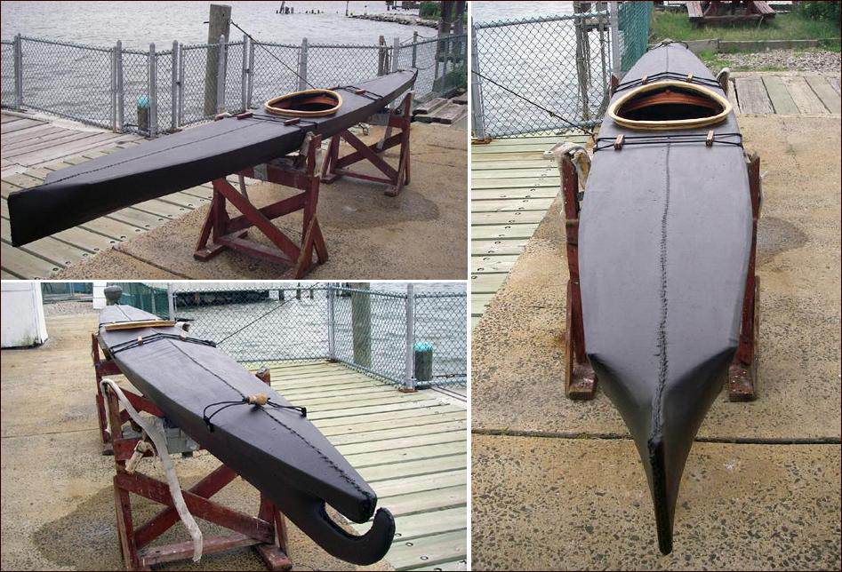

| Nikumi by Jack Gilman (US) | Menu Last Page Next Page |
|

Jack, from Yonkers, New York has completed a wood frame Nikumi Baidarka. Use the {Back} key to return. He reports that....."It is very comfortable in small chop, incredibly stable, but edges well. I like to be able to edge the boat in following seas to correct, and it was easy to do it with the Nikumi. That's the fun part! I think baidarkas do this better than any boats, (IMHO) and this one is very well balanced. Seems fast, but I have a sore elbow so never pushed it.
Jack has also completed a wood frame Nikumi 19, a Sea Ranger folder, and is building a Sea Rover. |
|